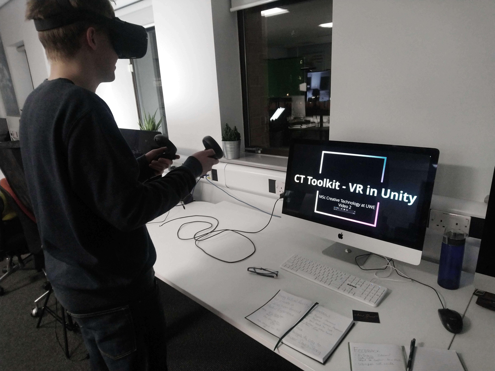

Words from Worlds is a VR project built in the Unity game engine exploring stories from members of Bristol's homeless communities
This project was created during a university modules and is comprised of media collected by the
People's Republic of Stokes Croft
Audio stories were collected from members of Bristol's homeless communities, from members at various points of the homeless spectrum
A project was created that utilised virtual reality to present a navigable city environment that tasked an interacter to discover and unlock segments of
one person's story

My buddy Michael using Worlds from Words on campus
The project was designed in the Unity game engine and used an Oculus Quest headset